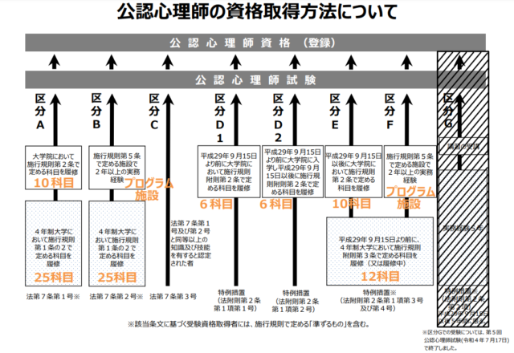

公認心理師について、公認心理師法の第二条では以下のように定められています。
この法律において「公認心理師」とは、第二十八条の登録を受け、公認心理師の名称を用いて、保健医療、福祉、教育その他の分野において、心理学に関する専門的知識及び技術をもって、次に掲げる行為を行うことを業とする者をいう。
一 心理に関する支援を要する者の心理状態を観察し、その結果を分析すること。
二 心理に関する支援を要する者に対し、その心理に関する相談に応じ、助言、指導その他の援助を行うこと。
三 心理に関する支援を要する者の関係者に対し、その相談に応じ、助言、指導その他の援助を行うこと。
四 心の健康に関する知識の普及を図るための教育及び情報の提供を行うこと。
引用元サイト：e-GOV 法令検索
また、公認心理師は国家資格で、同法（公認心理師法）の第四十四条では「公認心理師でない者は、公認心理師という名称を使用してはならない。」と定められています。
まとめると、公認心理師は「心理的に問題を抱えた相談者に対して心理学の専門知識に基づいたアドバイスを行うための資格（関西福祉化学大学）」のことを指します。
心理学に関する資格は臨床心理士や認定心理師など、公認心理師以外にも存在します。
以下では、特に臨床心理士、認定心理師との違いについて説明します。
まず、臨床心理士について日本臨床心理士資格認定協会では以下のように説明されています。
「臨床心理士」とは、臨床心理学にもとづく知識や技術を用いて、人間の“こころ”の問題にアプローチする“心の専門家”です。
中略
「臨床心理士」は、公益財団法人日本臨床心理士資格認定協会が実施する試験に合格し、認定を受けることで取得できる“心理専門職の証”となる資格です。引用元サイト：日本臨床心理士資格認定協会
以上の臨床心理士に関する説明と、前述した公認心理師に関する説明を比較すると、心理学の専門知識に基づいて人々の「こころ」をサポートする仕事であるという点では似たような仕事であると言えます。
一方で、公認心理師が国で定められている資格（国家資格）であるのに対し、臨床心理士の資格は公益財団法人日本臨床心理士資格認定協会で取得できる民間の資格であるという点が異なります。
また、公認心理師と臨床心理士との違いについて以下のようにも説明されています。
公認心理師と臨床心理士とで異なる点は医療現場で見受けられます。
従来、臨床心理士は臨床心理技術者として診療報酬の加算対象でしたが、2018年度からは公認心理師だけが診療報酬の加算対象となっています。引用元サイト：関西福祉化学大学
次に、認定心理師について日本心理学会では以下のように説明されています。
｢公益社団法人日本心理学会｣が認定する心理学の基礎資格で，大学で心理学に関する標準的な基礎知識と基礎技術を修得していることを認定するものです。この制度は，心理学専攻者としてのアイデンティティを持ち，専門性の向上に資するために設けられました。
（中略）
認定心理士は心理学の基礎資格であり，職能の資格ではありません。大学で心理学を専門科目としているということは証明されますので，そのことを生かした仕事は出来ると思われます。引用元サイト：公益社団法人日本心理学会
このように、認定心理師と公認心理師の違いは、認定心理師は臨床心理士と同じように民間の資格で、公認心理師は国家資格という点です。
また、日本心理学会の説明にあるように、認定心理師は心理学の基礎資格であって、直接職業に生かせる公認心理師とは異なり、認定心理師の資格は持っているだけで就職できるというものではありません。
公認心理師の資格を取得するには、厚生労働省によって以下の受験にかかわる条件が定められています。
帝京平成大学によると、公認心理師の就職先は「医療・福祉・教育現場でカウンセラーとして働きます。そのほか、企業の産業カウンセラーや、少年院や刑務所で受刑者のカウンセリングを行うケースもあります。」と説明されています。
以下、公認心理師について学べる書籍について紹介します。